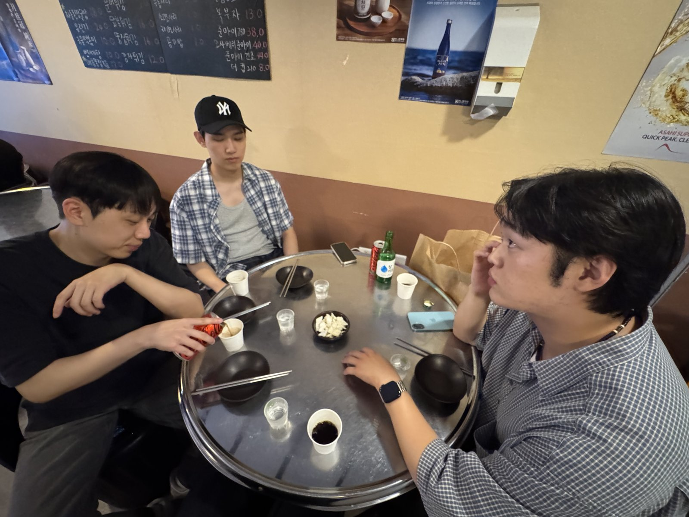

Weekly Drinking Promotion
Association (WDPA)
입력 : 2026년 8월 23일

매주술권장협회 핵심 운영진 성복·신봉동 일대 회동 현장 / 사진=WDPA
매주술권장협회 핵심 운영진이 지난 22일 경기 용인시 성복역과 신봉동 일대에서 신규 수트 구매를 시작으로 지역 맛집 방문, 단골 포차 재회, 문화예술 활동 및 심야 e스포츠까지 이어지는 장시간 현장 일정을 진행한 것으로 확인됐다.
이번 일정의 시작은 송병완 상무이사의 신규 수트 확보 프로젝트였다.
협회 관계자에 따르면 송 상무이사의 새로운 공식 복장을 마련하기 위해 허근영 전무이사와 최민규 상근부회장이 성복역 일대에 집결했다.
두 사람은 송 상무이사와 함께 다양한 제품의 디자인과 착용 상태를 확인하며 구매를 지원했고, 최종적으로 신규 수트 확보에 성공한 것으로 전해졌다.
협회 내부에서는 이번 구매를 단순 의류 소비가 아닌 송병완 상무이사 비주얼 경쟁력 강화 및 대외 이미지 고도화 사업의 일환으로 평가하고 있다.
수트 구매 절차를 마친 운영진은 인근 ‘단대해장국’으로 이동했다.
높은 지역 인지도로 인해 현장에는 이미 상당수의 대기 인원이 있었지만 운영진은 별도의 특혜를 요구하지 않고 일반 시민들과 함께 웨이팅 절차를 거쳐 입장했다.
한 관계자는 “기다리는 동안 다른 식당으로 이동하자는 의견도 나올 수 있었지만 누구도 이탈하지 않았다”며 “감자탕에 대한 강한 정책적 의지를 확인할 수 있었다”고 말했다.
잠시 후 테이블에는 큼직한 돼지등뼈와 감자, 각종 채소를 진한 육수에 장시간 끓여낸 감자탕과 대한민국 서민 주류문화의 핵심 액체자산인 소주가 배치됐다.
운영진은 웨이팅으로 인해 상승한 기대치를 충족시키듯 뜨거운 국물과 부드럽게 익은 고기를 빠른 속도로 섭취했고, 소주를 곁들이며 성공적으로 첫 일정을 마무리했다.
식사를 마친 뒤에는 한창희 협회장이 현장에 합류했다.
운영진은 곧바로 2차 주류시설로 이동했으며, 평소 뜨거운 어묵 국물에 남다른 애정을 보여온 한 협회장의 식문화 취향을 반영해 오뎅탕을 공식 안주로 선정했다.
앞선 감자탕 일정에서 이미 상당량의 음식과 주류를 섭취한 만큼 2차는 비교적 간단한 형태로 운영됐다.
그러나 이날 일정은 여기서 끝나지 않았다.
운영진은 차량 대신 도보 이동을 결정하고 성복·신봉 생활권을 직접 가로질러 신봉동으로 향했다.
목적지는 협회 운영진과 오랜 인연을 이어오고 있는 ‘민들레 포차’였다.
오랜만에 매장을 찾은 운영진은 사장님과 반갑게 인사를 나누며 3차 회동을 시작했다.
특히 이날 민들레 포차에서는 일반적인 주점 운영방식과는 다소 다른 현상이 관측됐다.
운영진이 별도로 주문하지 않은 각종 특별 안주가 사장님의 판단에 따라 지속적으로 테이블에 공급되기 시작한 것이다.
메뉴판과 주문 절차를 뛰어넘은 예상치 못한 환대가 계속되자 참석자들 역시 크게 감동한 것으로 전해졌다.
한 현장 관계자는 “분명 주문한 기억이 없는데 새로운 음식이 계속 도착했다”며 “어느 순간부터는 메뉴판의 존재 이유에 대해 고민하게 됐다”고 말했다.
이에 한창희 협회장은 일방적인 식량 지원을 계속 받을 수 없다고 판단해 즉각적인 민간 차원의 보답에 나섰다.
한 협회장은 “이 감사한 마음을 아이스크림으로 돌려드리고 싶다”는 뜻을 밝힌 뒤 인근 마트로 이동해 대한민국을 대표하는 대용량 바닐라 아이스크림 ‘투게더’를 직접 구매했고, 이를 사장님에게 전달했다.
협회 관계자는 “안주가 음식으로 들어온 만큼 답례 역시 음식으로 돌려드린 것”이라며 “주점과 협회 간 상호 호혜적 식량 교류가 현장에서 자연스럽게 이뤄졌다”고 평가했다.
운영진은 이후에도 사장님이 제공한 특별 안주를 맛보며 술잔을 이어갔고, 민들레 포차에서의 오랜 추억과 최근 근황 등을 나누며 회동을 이어갔다.
3차 일정을 마친 뒤에는 인근 아이스크림 할인점을 방문해 후식 확보에 나섰다.
각자 원하는 아이스크림을 선택해 섭취하던 중 매장 안에서 흘러나오는 음악에 일부 운영진이 반응하면서 현장은 갑작스럽게 심야 스트리트 퍼포먼스 프로그램으로 전환됐다.
참석자들은 아이스크림을 손에 든 채 음악에 맞춰 자유로운 춤을 선보였으며, 별도의 무대나 조명 없이도 짧은 댄스타임이 이어진 것으로 알려졌다.
그러나 이날 일정은 아이스크림으로도 종료되지 않았다.
운영진은 귀가 대신 ‘유지트PC방’으로 이동해 심야 e스포츠 친선전을 진행했다.
첫 종목으로는 리그 오브 레전드의 증강형 게임모드인 이른바 ‘증바람’이 채택됐으며, 경기 시작에 앞서 가장 낮은 피해량을 기록한 참가자가 전원의 음료 비용을 부담하기로 합의했다.
경기 종료 후 전투 데이터를 확인한 결과 샤코를 운용한 최민규 상근부회장이 최저 딜량을 기록하며 최종 결제자로 확정됐다.
최 상근부회장은 별다른 이의 제기 없이 참석자 전원의 음료를 결제했다.
한 관계자는 “지난 13일 볼링 패배 이후 아이스크림 몰빵 가위바위보에서도 최종 패배한 전력이 있다”며 “최근 최 상근부회장의 내기성 비용 집행 빈도가 높아지고 있어 재정 건전성에 대한 우려가 나온다”고 말했다.
이어진 두 번째 종목은 서든어택이었다.
운영진은 비교적 늦은 시간임에도 높은 집중력을 유지하며 게임을 진행했으며, 교전 상황마다 고성이 오가는 등 적극적인 의사소통이 이뤄진 것으로 전해졌다.
협회 관계자는 “전술적 브리핑이라기보다는 그냥 소리를 지르는 경우가 더 많았던 것으로 파악하고 있다”고 설명했다.
모든 e스포츠 프로그램을 마친 운영진은 그제야 귀가를 결정했다.
이들은 늦은 밤 신봉동 일대를 걸어 각자의 귀가 동선으로 이동했으며, 이 과정에서 송병완 상무이사가 과거 즐겨 듣던 추억의 힙합 음악을 연이어 재생하면서 예상치 못한 마지막 일정이 시작됐다.
운영진은 송 상무이사의 힙합 메들리에 맞춰 함께 노래를 부르며 걸었고, 수트 구매에서 시작해 감자탕과 오뎅탕, 민들레 포차, 아이스크림, e스포츠까지 이어진 장시간 회동을 그렇게 마무리했다.
한편 협회 내부에서는 오후에 수트 한 벌을 사기 위해 성복역에 모였던 일정이 어째서 심야 서든어택과 힙합 단체합창으로 종료됐는지에 대한 정확한 경위 파악이 필요하다는 의견도 제기되고 있다.